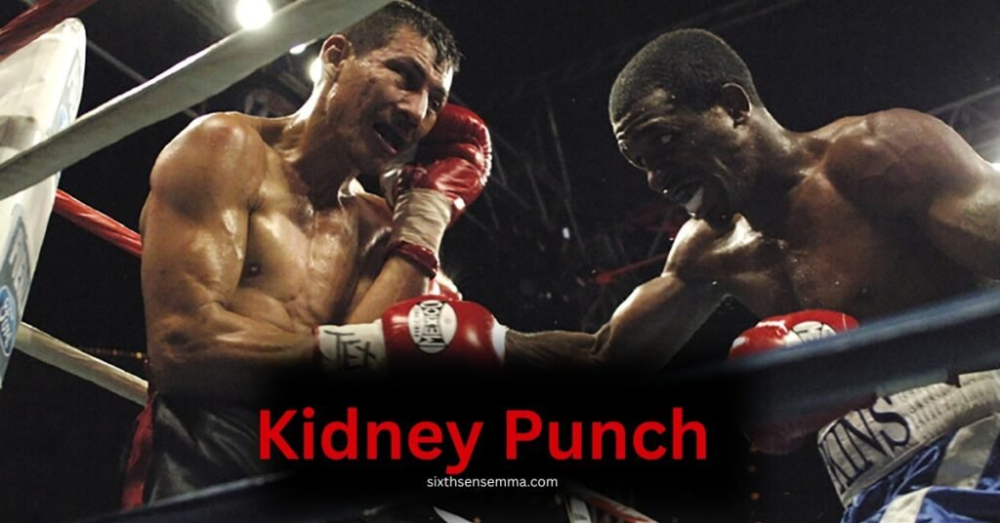
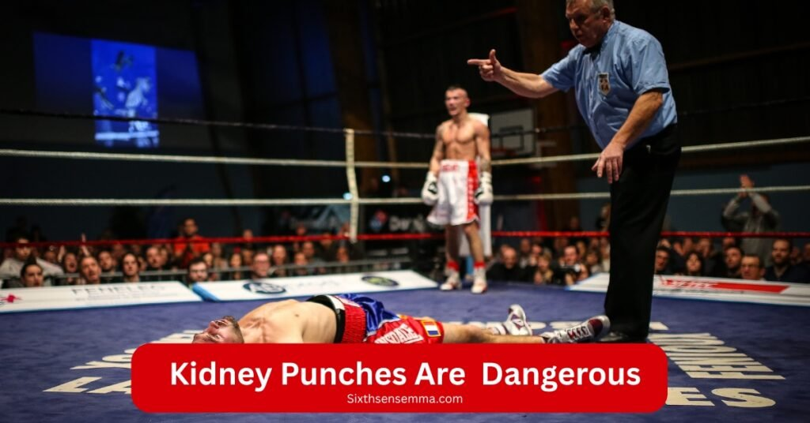
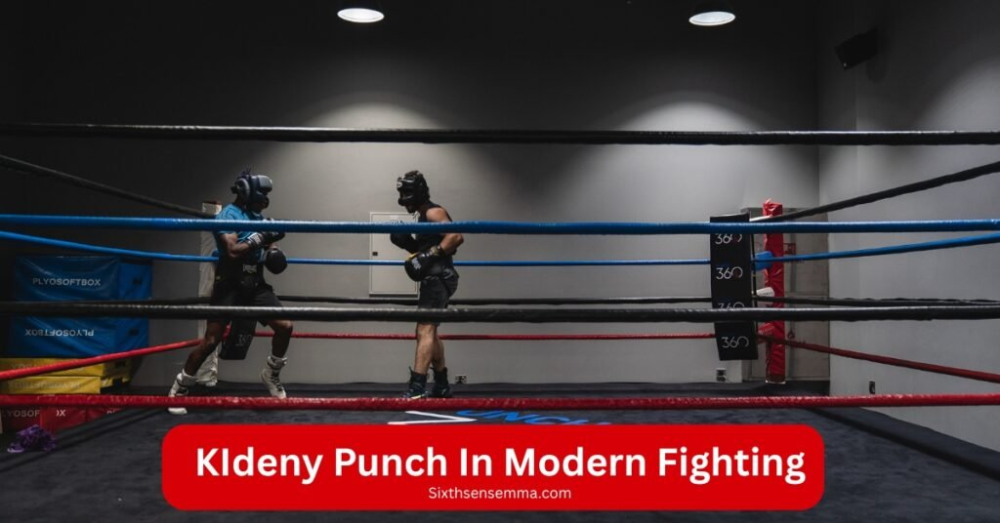

Kidney Punch , How It Works, Why It Hurts & Its Legality

Kidney punch is one of the most dangerous strikes in combat sports, known for targeting a vulnerable organ in the lower back. Though illegal in most boxing, MMA, and sanctioned matches, it’s still used in some unsanctioned fights, often as a sneaky, sharp blow when an opponent’s guard is down.
The kidneys, being lightly protected by muscles and bones, can suffer internal bleeding, painful damage, and long term injuries from even a single strike. A powerful hit here can drop a fighter, disrupt breathing, and cause serious problems not just in the fight, but well beyond.
The area is not built to absorb such shots, and a poorly aimed or uncontrolled attack to this spot can lead to medical difficulties, making it a high-risk move that most professional sports have rightly banned.
Many fans don’t fully understand how big of a deal this is, but for anyone who’s been hit like that or has seen a bad takedown go wrong, they know how fast it can escalate. Whether used by mistake or in strategy, it’s not just about the hit it’s about what comes after the injury, the reaching for recovery, and the powerful, short burst of pain that changes the rhythm of a fight.
Definition: What Is a Kidney Punch?
Kidney punch is a single blow or strike aimed at the lower back, near the spine, where the kidney sits close to the ribcage and just above the hips a very thinly protected area of the body.
When fighters receive a clean hit here, it can weaken their control, sometimes even causing the opponent to stop moving due to the painful shock. I’ve seen how just one punch in this natural target can disrupt the flow of blood, affect internal fluids, and put the fighter at risk.
While it’s used in some styles to slow down or weaken an opponent, this area is not meant to absorb heavy impact, making any blow to it potentially dangerous. Many fighters aim for this spot to gain an advantage, but few realize how painful and damaging a strike here can be.
How to Throw a Kidney Punch (If Allowed)
Below is a clear and simple guide to throwing a kidney punch only for training or self-defense contexts where it may be allowed. Always double-check rules in sports like boxing or MMA before practicing.
Step by Step Breakdown for Kidney Punching
- Close the distance using effective footwork to get within striking range.
- Step into a compact stance, staying balanced and ready to move.
- Use a fake jab or slip to distract your opponent and create an opening in their guard.
- Shift your weight onto your lead leg to prepare your body for the punch.
- Rotate your hips with control to generate power from your core.
- Use your rear arm to deliver a short, sharp hook to the lower back, just under the ribs.
- Retract your arm quickly to reset and prepare for any possible counter.
- Maintain smooth motion and consistent contact control throughout the entire combo.
Best Angle and Body Movement
- Walking hook style:
This works best when you’re moving forward, closing the gap with steady footwork. As you walk, keep a low, compact stance and watch for the opponent’s side to open. From there, use a sharp hook—rotating your hips and stepping slightly to the side to create a clean angle toward the kidney area. The punch should be quick and controlled, with full body motion behind it.
- Clinch hook:
In tight clinch situations, there’s little room to swing wide, so use a tight, short hook from your rear hand. With your arm tucked, twist your torso and press into the opponent’s back or side, targeting just under the ribcage. This method relies more on precision, rotation, and close contact than speed, and it’s often used during MMA tie-ups where a quick punch can make a big difference
When It Might Happen in a Real Fight
- Inside corner pressure:
When you’re pressing an opponent into a corner, the tight environment limits movement, and the fighter may lean or turn slightly, exposing the lower back. This creates a perfect moment to land a compact, well timed kidney punch, especially when you’re dictating the pace and keeping them stuck. - As part of body shots combo:
A kidney punch often fits naturally into a series of body shots, especially when the opponent is focused on defending the head. In the middle of a flowing combo, the side may open up, allowing for a quick, sneaky shot just under the ribs as the fighter rotates from one punch to the next. - After a close clinch or break:
In MMA or boxing, once a clinch is broken, both fighters may be off balance for a second. A quick step and pivot during this moment can give you just enough space and angle to land a clean punch to the kidney, catching your opponent before they reset their guard.
Note: In most professional sports (boxing, MMA), this strike is illegal and can lead to point loss or disqualification. It’s only trained in environments that allow targeted self-defense practice or certain ring arts like Muay Thai.
What Are the Benefits of a Kidney Shot in Fighting?
Although controversial, a kidney punch or kidney shot offers several tactical advantages when used correctly. Here’s why some fighters include it in their strategy:
- Quick Disruption: Instantly breaks the opponent’s rhythm and slows their momentum.
- Tactical Control: Helps gain dominance and divert the fight in your favor.
- Nerve Response: Triggers the vagus nerve, affecting breathing and stamina.
- Effective for All Levels: Useful for both beginners and trained professionals.
- Cumulative Damage: Repeated shots wear down the body over time.
- Psychological Effect: Lowers confidence, causes hesitation, and forces retreat.
Safety Precautions Before Practicing a Kidney Punch
Before learning or practicing a kidney punch, always remember it’s a risky move—so follow these safety steps to stay safe and smart:
- Train Under Qualified Supervision
Always practice under a qualified coach who understands Muay Thai, self-defense, and safe technique for targeting the kidney area. - Wear Proper Protection
Use pads, protectors, and body gear to prevent bruising, internal bleeding, and organ damage, especially around the back and kidneys. - Follow Legal and Ethical Rules
Verify if kidney punches are legal in your activity. In many sports, they’re illegal, and using them in the wrong scenario can lead to penalties or harm. - Start Slow with Light Force
Begin with minimal, mild punches to develop precision, accuracy, and proper stance without causing pain or injury. - Take Time to Recover
Allow rest between sessions and monitor for any signs of issue, like blood in urine, sharp back pain, or movement problems. - Use Controlled Timing and Follow Through
Focus on timing, smart follow through, and fluid movement to ensure each punch is safe and not a reckless hit to a vital organ. - Know When to Stop
If you’re feeling unusual pain, discomfort, or suspect internal damage, stop immediately. Don’t push through long term recovery matters more. - Understand the Risk
The kidneys are delicate. Using heavy force without preparation can cause serious and deeper injury. Respect the risk, train smart, and always follow safety guidelines like VGRHQ if available.
Common Mistakes to Avoid While Throwing a Kidney Shot
Here are some frequent errors fighters make when attempting a kidney punch. You may train more safely and intelligently by following these easy fixes:
- Throwing Without Proper Supervision
There is a greater chance of injury, disqualification, or even irreversible damage to the spine or ribs when attempting a kidney punch without a coach or professional guidance. - Lack of Accurate Targeting
Hitting too high or missing by an inch can land you in the wrong spot, especially if your movement or alignment is off. Always check your stance, shoulder-width, and placement. - Using Too Much Force Too Early
Many boxers and MMA beginners throw with full power before learning proper technique, which can cause injuries or a penalty. Build strength and precision gradually. - Poor Footwork and Balance
Throwing with unstable footwork or from a weak stance reduces accuracy and increases the chance you’ll fall off balance or expose your body to counters. - Ignoring Timing and Feints
Every clean strike needs smart timing. If you don’t feint or add setup movement, your shot becomes predictable, making you an easy target for a counter. - Trgeting a Guarded or Closed Position
If your opponent’s guard, arms, or legs are tight, don’t snap a punch just to force it. Wait for them to open, like after a miss, a low kick, or a sudden shift. - Throwing Wild or Off-Channel Shots
A wild swing apart from your body’s natural channel can mess up your hips, foot, and arms alignment, leading to poor strike delivery or even a counter. - Skipping Sparring or Smart Drills
Always allow controlled sparring first. Without light, well-planned practice under coaching, it’s hard to spot mistakes and fix them slowly before entering a real match or cage.
By avoiding these mistakes, you’ll train smarter, stay safer, and improve faster. Want tips next on defense or legal rules? Just say the word.
Why Kidney Punches Are Illegal and Dangerous

Kidney punches hurt so much that they’re banned in most combat sports. Here’s a deeper look at why:
- High Risk of Internal Injury
Kidney punches can cause internal bleeding, bruising, and even life threatening damage to a vital organ. - Vital Organ Vulnerability
The kidneys play a crucial role in filtering toxins and managing fluid balance, and they’re poorly protected, making them an easy target for serious harm. - Severe Physical Consequences
A direct punch to this area can lead to blood in urine, laceration, or total organ failure, with symptoms that may worsen over time. - Violation of Combat Rules
Most major organizations like UFC and professional boxing have banned this move since the early 1900s due to its unfair and unsafe nature. - Referee and Expert Warnings
Referees and commentators issue strong warnings against stealthily thrown strikes to the back, as they clearly violate official rules. - Misunderstood by Some Fans
While some fans on platforms like Reddit or watching old clips of George Foreman admire the power, they often ignore the serious pain and gradual internal damage it causes. - Long Term Health Impact
A single strike can alter a fighter’s entire week, career path, or physical well being sometimes with permanent consequences. - Strict Rule Enforcement Today
Under current regulations, a kidney punch can lead to disqualification, as the hidden impact can cause far more than momentary hurt it can end a fighter’s journey in the sport.
Can You Defend Against a Kidney Punch?
Yes, you can defend against a kidney punch, but it takes smart movement, solid guard, and constant control over your positioning. Here are simple and proven ways to protect yourself:
- Get Into a Proper Defensive Stance
Stand with your feet shoulder width apart, knees slightly bent, and your core engaged to prepare for movement and impact. - Keep Your Elbows and Arms Tight
Bring your elbows close to your body to cover your ribs and back; this shields your kidneys from close range punches. - Use Footwork to Stay Mobile
Stay light on your feet pivot, shift direction, and never stay flat or squared to your opponent. - Control the Clinch
If you get tied up in a clinch, immediately use an underhook or adjust your positioning to avoid leaving your side exposed. - Watch for Punch Setups
Learn to read your opponent’s movement. Many kidney punches come from sneaky angle changes, so be ready to adjust your guard. - Redirect or Deflect the Shot
Slightly twist your body or step offline when you sense the punch coming. Even a small shift can redirect the force or cause a miss. - Strengthen Your Core Muscles
Do planks, low squats, and core training to help absorb strikes that manage to land, reducing long term damage. - Practice With a Coach or Partner
Train defensive scenarios in sparring to develop timing, block efficiency, and defensive instincts against real time kidney shot setups
Are Kidney Punches Still Used in Modern Fighting?
Yes, kidney punches are still used in some fighting formats, but their legality depends on the sport. In sanctioned boxing, MMA, and Muay Thai, these strikes are often not permitted due to the risk of internal organ damage and serious pain.

However, in some unsanctioned brawls, oldschool styles, or certain positions during wild exchanges, the blow may still land especially when thrown as a sneaky hook to the side. Fighters like George Foreman have been known for body attacks that border on the kidney area.
In wrestling and street fights, where rules are looser or non-existent, a punch to this organ can be seen as a brutal tactic, though it’s incredibly risky and dangerous. Even in controlled matches, fighters might throw punches, knees, or an elbow during body loop sequences, accidentally striking near the kidneys.
That’s why proper gear, protection, and core strength remain vital to absorb impact and avoid breathing issues or worse. Modern fighting focuses on legal, strong positions, but the tactic remains a grey zone move effective, but not always allowed or legal.
SixthSense MMA Where Fighters Train Safely & Legally
Looking to learn smart, legal, and effective fighting techniques? At SixthSense MMA, we teach you the real art of fighting without risky or banned moves like the kidney punch.
Our expert trainers focus on safe strikes, solid defense, and real skill building for all levels. Whether you’re new or already training, we’ll help you improve the right way. Join us for a free class and see why USA fighters trust SixthSense MMA.
Benefits of Training at SixthSense MMA
- Learn legal and effective self-defense skills
- Avoid dangerous moves like kidney punches
- Train under certified, experienced instructors
- Get personalized attention in small class groups
- Improve strength, balance, and reflexes safely
- Build confidence in real-life fight scenarios
- Access modern equipment in a clean, pro facility
Customer Reviews:
- “The coaches actually explain why some strikes like kidney punches are banned. That helped me stay safe in competition.”
— Rebecca T., Tampa, FL - “I’ve trained at 3 gyms, but this is the one I stuck with. Best experience so far.”
— Ethan L., Phoenix, AZ - “Their beginner program is amazing! I was nervous, but now I feel powerful.”
— Maya R., San Diego, CA - “My son trains here. He’s learning discipline and safety together. Highly recommend!”
— Sarah K., Chicago, IL - “Great vibes, top coaches, and they never teach dirty or illegal moves like kidney shots.”
— Daniel W., New York, NY - “It’s hard to find a gym that teaches clean fighting and respect. SixthSense MMA nails it.”
— Nina G., Seattle, WA
Contact Us
Want to learn more or book a session?
Click the button below and head to our official contact page:
Contact SixthSense MMA
Conclusion
Kidney punching is prohibited or highly prohibited in the majority of sports and competitive formats because to the high danger of internal damage, chronic injuries, and serious harm. While it has been used in older styles like traditional Muay Thai, the modern framework of rules and safety guidelines aims to protect fighters, promote fairness, and prevent disqualifications caused by reckless strikes.
Under official regulations, its use is only permitted in very specific sets of training with expert coaching, protective pads, and controlled sparring under close supervision. Fighters now train to follow unified rules, focusing on longevity, health, and future opportunities, not just immediate punch power.
A clean competition must avoid any punches that pose danger to the kidneys, and oversight should never be taken lightly. The ban on this strike doesn’t just belong to rulebooks it belongs to a higher priority: protecting athletes and ensuring that matches remain intense but not deadly.
FAQ’s
Because kidneys are sensitive and unprotected by bone. Even a light shot can cause strong pain or injury.
No, kidney punches are illegal in professional boxing.
Yes. Some people may lose breath or drop to the ground due to nerve response.
Stop training, rest, and seek medical help if the pain stays.
Use smart footwork, keep your elbows tight, and control clinch positions. Staying mobile and aware of your opponent’s setup movements is key. Core strengthening and practicing defense with a coach also helps prevent or reduce damage.
A clean hit to the kidney can cause sharp pain, disrupt breathing, impair movement, and in serious cases, lead to blood in the urine or organ trauma. It can quickly drop an opponent or change the rhythm of a fight due to the body’s intense reaction.
Train with us in Coppell
The first class is free. Shorts, a t-shirt and a water bottle. We lend the rest.
Book a free class